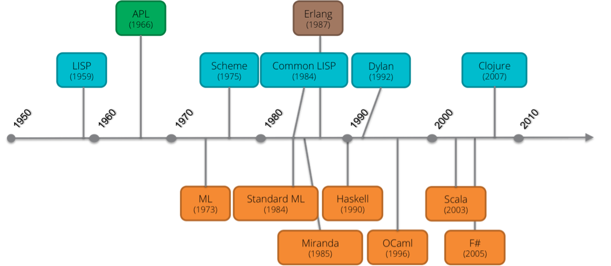

graph TD
A[Programming Paradigms] --> B[Imperative]
A --> C[Declarative]
A --> D[Multi-Paradigm]
B --> B1[Procedural]
B --> B2[Object-Oriented]
C --> C1[Functional]
C --> C2[Logic]
C --> C3[Constraint]
C --> C4[Query]
style A fill:#e1f5fe
style B fill:#f3e5f5
style C fill:#e8f5e8
style D fill:#fff3e0
CM1 - Introduction à la programmation fonctionnelle
Introduction
Paradigmes de programmation
Un paradigme de programmation est une approche fondamentale ou une façon de concevoir et d’organiser un programme informatique. C’est essentiellement un style de programmation qui définit comment structurer le code, comment représenter les données, et comment résoudre les problèmes.
Certains langages ont des fonctionnalités qui permettent les 2 styles, comme Python, Java, Scala. Mais chaque langage a un style par défaut qui va encourager plutôt le style impératif ou fonctionnel.
- Impératif sans être turing-complet: Terraform
- Logic: Prolog
- SQL 92 n’est pas turing-complet. SQL99+ l’est.
Historique
- 1936 - Alonzo Church: calcul lambda => programmation fonctionnelle
- 1936 - Alan Turing: machine de turing => programmation impérative
- Le lambda calcul est turing-complet
- Machine de turing : modèle abstrait du fonctionnement des ordinateurs. Une fonction est calculable si et seulement si elle peut être calculée par une telle machine.
- Turing-complet : système formel qui possède un pouvoir expressif au moins équivalent à des machines de turing. Les langages de programmation sont turing-complet.
- fun fact: Church était le directeur de thèse de Turing.
Calcul lambda
Théorie sur les fonctions
| Nom | Syntaxe | Exemple | Explication |
|---|---|---|---|
| Variable | {name} | x | une variable nommée “x” |
| λ-abstraction ou fonction |
λ{paramètre}.{corps} | λx.x + 1 | une fonction qui prend un paramètre “x” et dont le corps est “x + 1” |
| Application | f(x) ou f x | (λx.x+1)(3) | application de l’argument 3 à la fonction x+1 |
Opération : α-renommage
Renommage de variable pour éviter les collisions
λx.x + 1 →α λy.y + 1Opération : β-reduction
Substitution : Dans une application, remplace la variable par l’argument.
(λx.x+1) 3 →β 3 + 1
(λx.M) N →β M[N/x]Fonction d’ordre supérieur
- (en) Higher-Order function
- Une fonction peut être passée comme argument d’une autre fonction.
- Une fonction peut renvoyer une fonction
Currying
Comment définir une fonction prenant plusieurs paramètres ?
- Définir une fonction qui renvoie une fonction
- Applications successives à 1 paramètre
(λx.λy.x + y) 1 2 →β (λy.1 + y) 2 →β 1 + 2
(λx.λy.L) M N →β (λy.L[M/x]) N →β L[M/x][N/y]Scala :
((x: Int) => (y: Int) => x + y)(1)(2)D’après le nom du mathématicien Haskell Curry.
(λx.λy.x + y) est une fonction qui prend un paramètre x et qui renvoie une autre fonction prenant un paramètre y.
Church encoding - booléens
Comment construire des boucles, instructions conditionnelles, booléens, entiers, … ?
True = λx.λy.x
False = λx.λy.y
ifthen = λb.λx.λy.b x y
(λb.λx.λy.b x y) True M N = M
(λb.λx.λy.b x y) False M N = N
not = λb. ifthen False TrueSi le booléen est true, ifthen True M N renvoie le premier argument (définition de True). Cela paraît compliqué, mais une fois que l’on a défini ces éléments, on peut les réutiliser dans d’autres constructions comme le not.
Church encoding - entiers naturels
entier n = fonction qui prend une fonction f et l’applique n fois.
0 = λf.λx.x
1 = λf.λx.f x
2 = λf.λx.f (f x)
3 = λf.λx.f (f (f x))
...
plus = λm.λn.λf.λx.m f (n f x)
succ = plus 1
= λn.λf.λx.f (n f x)plus 1 2 = (λm.λn.λf.λx.m f (n f x)) 1 2
→β λf.λx.1 f (2 f x)
→β λf.λx.1 f (f (f x))
→β λf.λx.f (f (f x))
= 3
(2 f x) = (λf.λx.f (f x)) f x
→β f (f x)
1 f (f (f x)) = (λf.λx.f x) f (f (f x))
→β f (f (f x))Récursion
- comment faire une boucle ? Utiliser la récursion !
FACT = λn. ifthen (zero? n) 1 (mult n (FACT (pred n)))- ⚠️ on ne peut pas utiliser
FACTdans la définition deFACT! - solution : utiliser un combinateur de point fixe
Combinateur de point fixe
- combinateur de point fixe = fonction
FIXqui a la propriété
FIX f = f (FIX f)- cela permet de résoudre notre problème d’auto-référence
fact_maker = λf.λn. ifthen (zero? n) 1 (mult n (f (pred n)))
FACT = FIX fact_maker
= fact_maker (FIX fact_maker)
= fact_maker FACTfact_maker est une fonction qui serait la fonction factorielle si elle recevait en argument la fonction factorielle.
FACT = (λf. λn. ifthen (zero? n) 1 (mult n (f (pred n)))) FACT
FACT = λn. if (zero? n) 1 (mult n (FACT (pred n)))On retrouve notre définition initiale !
Combinateur Y
- Il existe plusieurs implémentations de combinateurs de point fixe
- Le plus connu est le Y combinator
- en pratique, les langages permettent les auto-références
Le combinateur de point fixe est une construction théorique qui permet de démontrer certaines propriétés, comme le fait que le lambda-calcul est turing-complet.
Des implémentations de compilateurs utilisent des techniques de point fixe.
Cela permet également d’évaluer ou de transformer des structures récursives, voir Matryoshka
Fun fact : “Y combinator” est une compagnie américaine de Venture Capital. Elle maintient Hacker News, un des meilleurs sites pour se tenir au courant des nouveautés technologiques.
Lambda-calcul simplement typé
- Problème : on pourrait utiliser
plusavec des booléens, ounotavec des entiers. - Solution : ajouter des types
- 1940 Alonzo Church : Lambda calcul simplement typé
- On associe un type à chaque terme
True: Bool
1: Num
λx.M : A → B- On indique le type d’entrée pour les fonctions :
- \((\lambda x^A \cdot M) \, N\)
- l’application est interdite si N n’est pas de type A
Cela commence à ressembler beaucoup aux langages de programmation modernes, et sert de base théorique pour des langages fonctionnels comme Haskell, OCaml, F#. Et cela a été inventé en 1940, 30 ans avant les premiers microprocesseurs !
Langages fonctionnels
Chronologie

Les langages sont sur un spectre :
Pure FP: Haskell, Elm (tout est fonctionnel par défaut) FP-first: Scala, Clojure, F#, OCaml (fonctionnel mais pragmatique) Multi-paradigm: Rust, Kotlin (bon support FP) FP-capable: Java, C#, Python, Javascript (peut faire du FP mais pas conçu pour)
FP Languages Features
- First class functions
- les fonctions sont des valeurs qui peuvent être stockées dans des variables.
- Higher-order function
- les fonctions peuvent prendre d’autres fonctions en paramètre ou retourner des fonctions.
- Immutability
- les opérations ne modifient pas les données. Une nouvelle donnée est renvoyée. Exemple: ajouter un élément à une liste.
- Pure functions
- une fonction qui renvoie toujours la même chose si on lui passe les mêmes données. Elle n’a pas d’effets de bords, comme imprimer sur la console ou modifier une variable globale.
- Algebraic Data Types
- permet de construire des types “produit” (ET), et “somme” (OU). Par exemple
Personneest un type produit qui contientnomETage.Couleurest un type somme : c’est unRedOU unGreenOU unBlue. En Java 17: sealed class + record.
- permet de construire des types “produit” (ET), et “somme” (OU). Par exemple
- Pattern matching
- permet de déconstruire un type en ses constituants.
- Prefer expressions over statements
- Exemple : Java ternary operator over if/else. Permet de composer les expressions et de les refactorer.
Avantages
- plus facile à tester et à débugger
- plus facile à raisonner
- programmes plus courts, plus lisibles
- parallélisation facilitée
- modularité
- sécurité : validation à la compilation, moins de bugs
LISP
- langage interprété, typage dynamique
- il existe plusieurs dialectes. Common Lisp est le standard
- dialecte moderne sur la JVM : Clojure
- notation préfixée : opérateur en premier, suivi des opérandes
(+ 2 3 4)
(* 5 6)- fonctions et fonctions anonymes :
(defun filter-positive (lst)
(remove-if (lambda (x) (<= x 0)) lst)
; test the function
(setq numbers '(-5 -2 0 1 3 -8 7 9 -1))
(filter-positive numbers) ; Returns (1 3 7 9)- code is data, data is code
- tout est une liste
- il est aisé d’écrire des macros
LISP killer apps : Emacs, AutoCAD+AutoLISP, Grammarly
Haskell
- langage compilé, typage statique, purement fonctionnel
- inférence de types
- évaluation “lazy” par défaut
expensiveComputation = error "This would crash!"
-- Only evaluates what's needed
result1 = if True then 42 else expensiveComputation -- 42
-- Infinite list of Fibonacci numbers
fibs = 0 : 1 : zipWith (+) fibs (tail fibs)
-- Take first 10 Fibonacci numbers
take 10 fibs -- [0,1,1,2,3,5,8,13,21,34]- très puissant, poussé par la recherche académique
- influence les autres langages
quickSort :: Ord a => [a] -> [a]
quickSort [] = []
quickSort (x:xs) = quickSort (filter (<x) xs)
++ [x] ++
quickSort (filter (>=x) xs)- Langages dérivés: PureScript, Unison
- inverse de “lazy” evaluation: strict ou eager
- les langages stricts peuvent proposer des construction lazy (Python generators, Scala call-by-name parameters)
- Powered by Haskell : Cardano blockchain, Standard Chartered derivatives trading, Facebook antispam, Pandoc
- Un langage à explorer si Scala vous plaît !
- notation préfixée pour l’application des fonctions, infixée pour les opérateurs arithmétiques